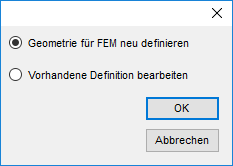

")

Dieses Programm erzeugt Daten, die von einigen FEM-Programmen gelesen werden können. Wenn die Geometriedaten von Ihrem FEM-Programm nicht erkannt werden, exportieren Sie diese in eine DXF-Datei. DXF-Dateien können von nahezu allen FEM-Programmen gelesen und bearbeitet werden.
Zu diesen Programmherstellern besteht momentan eine Verbindung.
Wenn Sie die Funktion aufrufen, öffnet sich ein Auswahldialog:
 |
Geometrie für FEM neu definieren
Fordert Sie auf, eine neue Datei für die Geometrie- und Lastdaten anzulegen (*.GEO; *.RGE). Geben Sie im Dialog Speichername FEM-Geometrie den Namen und Ordner an, wo die Datei gespeichert werden soll und klicken Sie auf Speichern. Die FEM-Definition (*.RGE) wird sofort angelegt. Nachdem Sie die Funktion [FemDef] verlassen haben, wird im selben Ordner die Geometriedatei (*.GEO) erzeugt.
Vorhandene Definition bearbeiten
Öffnet die Dateiauswahl (Dialog Lesename FEM-Geometrie). Wählen Sie die gewünschte FEM-Definition (*.RGE) und klicken Sie auf Öffnen.
Die gewählte FEM-Definition wird eingelesen.
Nach der Dateiauswahl stehen folgende Funktionen zur Verfügung:
Funktionen |
Beschreibung |
|---|---|
Geometrie umfahren. |
|
Wände eingeben. |
|
Rechteckige Stützen eingeben. |
|
Beliebige Stützen eingeben. |
|
Rechteckige Durchbrüche eingeben. |
|
Beliebige Durchbrüche eingeben. |
|
Flächenlasten eingeben. |
|
Flächenlasten eingeben. |
|
Einzellasten eingeben. |
|
Grundbelastung eingeben. |
|
Punkt verschieben. |
|
Geometrische Eingaben oder Lasten löschen. |
|
Einstellungen. |
|
Hilfspunkte setzen. |
Optionen |
Beschreibung |
|---|---|
|
Auswahlmodus für Geometriedefinition Das Wechseln des Modus ist während der Eingabe nicht möglich. Punkte (voreingestellt): Auswahl der Umrandung durch Anklicken beliebiger Punkte. Elementpunkte können mittels Fangbereich angeklickt werden. ·Wenn Sie die rechte Maustaste drücken, können Sie einen neuen Abstand eingeben und die Geometriedefinition fortsetzen. ·Wenn Sie den ersten Punkt nochmals anklicken, wird das Polygon automatisch geschlossen. Elemen: Auswahl der Umrandung durch Anklicken beliebiger Zeichenelemente (Linien, (Teil-)Kreise). ·Bei sich überschneidenden Elementen werden die Schnittpunkte vom Programm berechnet. ·Damit es nicht zu ungewünschten Schnittpunkten kommt, sollte die Umrandung nicht an einem Kreiselement beginnen oder enden. ·Besteht die Geometrie nur aus einem Teilkreis und einer Linie, klicken Sie den Teilkreis in der Nähe des zweiten Schnittpunkts nochmals an. Die gefundenen Elemente werden markiert. ·Kreiselemente werden in Segmente von ca. 50 cm Kantenlänge aufgelöst. |


Siehe auch: